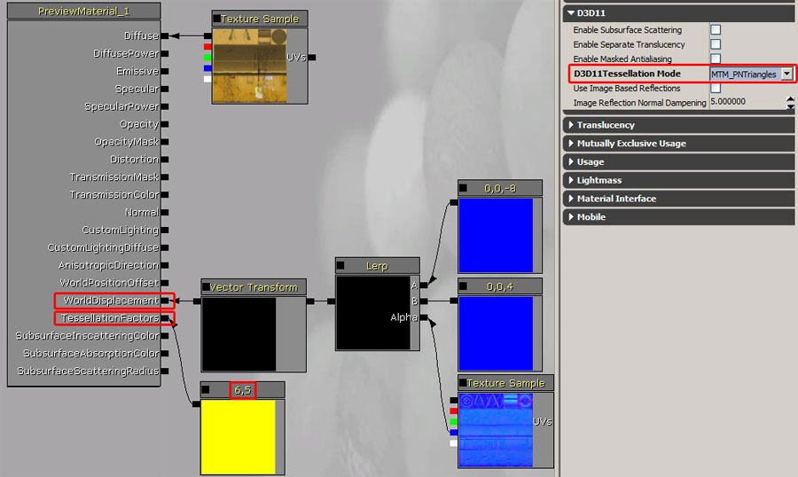
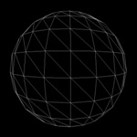
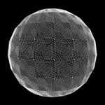
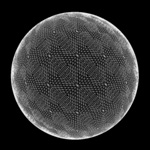

UDN
Search public documentation:
TessellationDX11CH
English Translation
日本語訳
한국어
Interested in the Unreal Engine?
Visit the Unreal Technology site.
Looking for jobs and company info?
Check out the Epic games site.
Questions about support via UDN?
Contact the UDN Staff
日本語訳
한국어
Interested in the Unreal Engine?
Visit the Unreal Technology site.
Looking for jobs and company info?
Check out the Epic games site.
Questions about support via UDN?
Contact the UDN Staff
DirectX 11 多边形细分
概述
在传统的游戏内容通道中，几何体都是通过三角形网格物体创建而成的。显卡可以高效渲染三角形网格物体，所以它们自然可以渲染美术师生成的网格物体。不幸的是，在使用的三角形不足时会导致画面质量变差，或者在使用三角形过多的时候渲染速度变慢。现代显卡支持硬件多边形细分，它可以通过将某些输入的网格物体划分为高度细分的渲染网格物体增加三角形数量。也就是说可以在某些三角形密度较低的地方创建网格物体，然后根据距离或其他属性进行定义（例如，根据几何体详细信息）。程序化这个过程，这样做可以执行位移贴图。   |
| 左侧：没有进行多边形细分 右侧：进行多边形细分和位移 |
激活方法

将这个三角形的边细分系数设置为 6，同时将它的内部设置为 5。 它还可以将这个位移贴图作为所使用的材质的 WorldDisplacement 输入。这个材质可以使用纹理的蓝色通道替换法线的方向。通过可以在两个向量（最小位移、最大位移）之间混合的 lerp（线性插值）实现这个操作。因为这两个向量只使用 z 分量，所以会导致向量形如： (0,0,x)。然后使用 VectorTransform 节点将该向量由三角形转换为世界空间坐标。需要这样做的原因是 WorldDisplacement 希望它的输入在时间空间坐标中。在没有使用转换节点的情况下，位移可能不会与网格物体表面对齐，顶点可能会沿着世界坐标 z 轴运动。多边形细分模式
|    |
| 左侧：没有进行多边形细分 中间：进行平坦细分（更多顶点，通常与位移结合使用） 右侧：进行可以软化几何体的 PN 三角形细分（轮廓变得更加圆润） |
细分因数
光滑组
UV 接缝

动态细分因数
 值为 150 可以在使用它的网格物体上正常工作。
值为 150 可以在使用它的网格物体上正常工作。
动态位移
 可以像其他材质属性一样更改位移数据。
可以像其他材质属性一样更改位移数据。